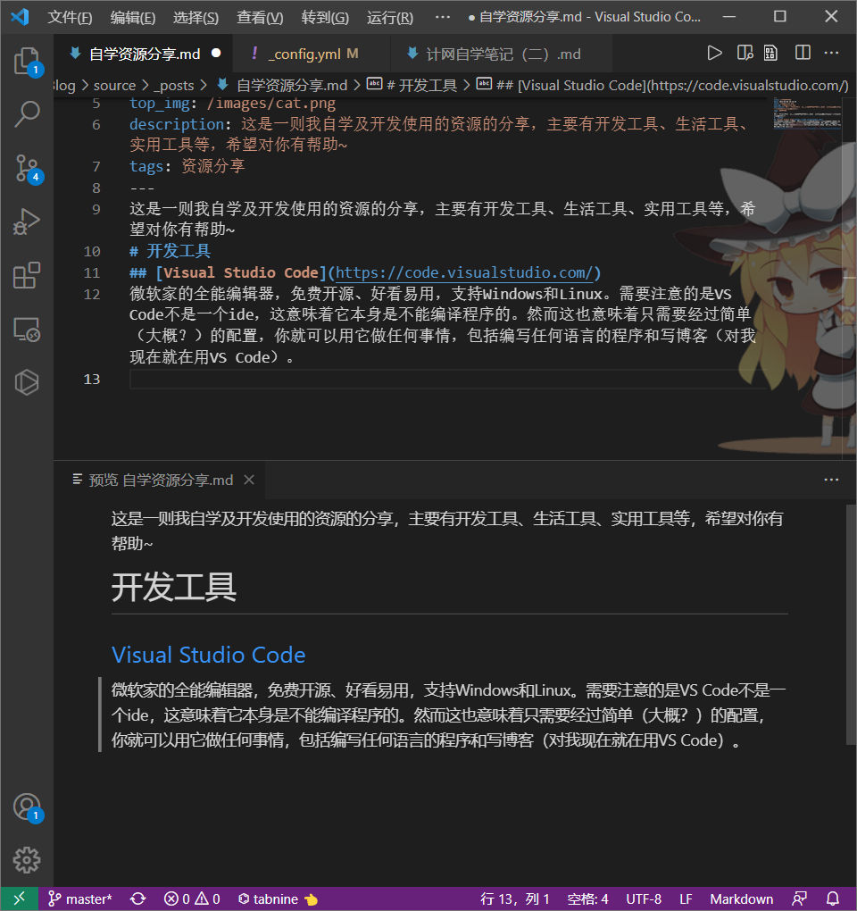

自学资源分享
这是一则我自学及开发使用的资源的分享，，希望对你有帮助~
开发
Visual Studio Code
微软家的全能编辑器，免费开源、好看易用、启动迅速，支持Windows和Linux。需要注意的是VS Code不是一个ide，这意味着它本身是不能编译程序的。然而这也意味着只需要经过简单（大概？）的配置，你就可以用它做任何事情，包括编写任何语言的程序和写博客（对我现在就在用VS Code）。

你可以在gz的博客那里学会简单的配置。
VSCode最厉害的地方在于他有一个庞大的拓展库，你可以在里面找到各种东西。比如说你看到上面的插图中有一只魔理沙，那个是background插件，其他的还有各种语言配套的语言插件啦，用AI来完成自动补全的Tabnice插件啦，二进制文件查看的hexdump啦，写博客用markdown语言有Markdown All in One插件啦。总之有了VSCode，其他编辑器我都再也没用啦！
Visual Studio
Visual Studio是微软家的IDE，可以开发.NET、C++等等。与VSCode不同的是，VS是以项目为单位来开发的，而VSCode一般以文件为单位编译运行，同时VS本身就包含了IDE应有的编译、调试、打包等功能。然而，这些功能的代价是庞大的安装体积和较慢的启动速度。
一般我小的项目我都会用VSCode，只有项目太大，需要链接库之类的时候我才会用VSCode，比如学习OpenGL。
既然说到IDE我顺便把其他的也说了吧，毕竟那些都是在开发相应程序的时候才需要了解的，就不单独说啦。比如开发Java可以用Intellij idea（只在开发MC模组的时候用），开发Python可以用PyCharm（没用过），开发安卓应用可以用Android Studio（没咋用过，倒是AIDE用过）等等。
菜鸟教程
我首选的学习语言的网站。这个网站优点就在于主要的语言乃至一些技术都有教程，而且还是中文！不仅如此，网站内容意简言赅，没有半句废话，特别适合有经验的人学习新语言。然而这个网站部分内容存在过时（比如Python教程就是2/3混在一起的），有些内容因为精简也省略了，还有大部分库都没有详细的介绍。如果你需要了解一门语言的具体技术细节的话不妨参考文档，比如c++ reference，Python文档等等。不过你要做好啃生肉的准备。
两年后的补充：菜鸟教程只是相对较好，推荐在学习任何东西之前 先看文档，作为一手资料，大部分情况下都会比二手资料好。下面是让文档不那么可怕的一些指引：
- 请务必区分一下概念：
- 文档 Documentation：统称每个项目包含的代码外的文字说明
- 参考 Reference：罗列出库里每个接口的用法
- 教程 Tutorial：面向初学者的指南
很显然我们应当选择文档下的教程
- 如果你看到教程是英文的，请首先查看是否有语言选择菜单，如果没有，请查看是否有社区翻译版本
bilibili
是的，B站大学实至名归，从编程到电焊，从医学到数学，你能找到各种学习内容，这里简单分享几个：
- 3Blue1Brown：分享数学知识的up主，我线代96分，一半是他教的。不下饭，要经常暂停。
- 硬件茶谈：分享硬核硬件常识的up主，看完你就能自己装电脑了。
- 稚晖君：告诉你学霸可以做到什么地步
- LinusTechTips：老莱的计算机科普，教你各种计算机相关的冷知识
- 极客湾Geekerwan：硬件评测，是个折腾的up主，让你能紧跟时代潮流，看懂最新硬件。
- BranchEducation：一个介绍计算机原理的新up，看起来可视化有点东西，可以了解一下
- Chubbyemu：分享临床医学案例的up主，很下饭，还能教你基本的医学常识
- 学院派Academia：分享社科知识的up主，非常硬核，下饭催眠都很好用
- 罗翔说刑法：教法律知识的，下饭，也能培养三观
- 人民医学：简单的医学科普
- 爱上半导体：电子信息专业的可以看看，讲半导体相关的，可视化做得不错
- 六层楼先生：妇产科医生，性科普做得不错
- 阿林吃土：教做饭的，小白入门级
还有一些泛科普的、教音乐美术的、教建模的、教特效剪辑的、教游戏理论的、教物理化学的、教历史的、甚至教昆虫的、教你学习的。想了解的可以关注我B站号：深海菠萝小狮子。
值得一提的是，B站的科普是面向所有人的，优点是可视化程度高，以视频形式展现容易看懂，但缺点也很明显：
- 很少有系统讲解知识的，大部分都是简化过的知识，只可以当做初步了解。
- 科普up的知识也是有限的，也许会有错误内容，甚至有的up会夹带私货，观看时要时刻保持辩证思维。
- up主为了恰饭有时需要打广告。
如果你真的想系统学习某种知识，你最好找那种分十几p的视频，或者直接去中国大学mooc学。
两年后的补充：B站大学变化快速，上面的 up 主有些已经转变方向，仅供参考。作为流媒体平台，大部分 up 难免娱乐性质更重，不要期待太高。
Termux
一个运行在安卓上的Linux终端。使用这个软件你可以在手机上写程序、跑代码、连接服务器、学习Linux、装逼等等。终端，也就是说没有图形界面，同时自带的Linux系统也是非常简洁的（软件包才97M），你需要安装许多软件，非常折腾。如果你不想折腾，AidLearning可能也不错，预装了完整的系统和各种软件，不过占用空间非常大，也比较卡，让本来就不太实用的东西更不实用了哈哈哈（当然主要是软件不会用）。
这里简单说一下这个软件怎么用吧，以后还会写折腾笔记的。
你首先得先学会Linux的基本操作，这个菜鸟教程有，包括目录操作命令、新建复制粘贴软件安装命令（软件自带pkg作为包管理器，apt也行）。然后安装vim作为文本编辑器，需要开发C++的话装g++，需要运行python就装python之类的。你还能用nmap扫端口（不过官网说软件库不提供黑客工具，你得自己整），ping服务器，查看网络设置等等。
当然如果你只是想学Linux的话还有很多选择，最简单的就是WSL，也可以像我以前大佬那样塞个系统进U盘，也不是不行。
Jupyter
你想学习Python的库吗？快用Jupyter！这种全新的交互方式将markdown和python结合在一起，让你的学习笔记能跑代码。来，直接上图！
这个博客是零基础的，这里简单介绍一下markdown和python。
Markdown是一个轻量级的标记语言，你可以理解为超简单的word。首先，用MD你就不需要鼠标了，标题直接用#，多少级标题就用多少个#，你不需要调字体大小；加粗斜体都用*；还有插入链接、代码框、注释等都是非常方便的。插入数学公式、插入图片、插入表格当然也能做到，不过有点小麻烦，可以用一些对应的工具来简化。MD本身是个纯文本文件，需要渲染器才能显示效果，你可以理解为源文件和编译。btw，这篇博客基本上就是用Markdown写的。
Python是一个简单的脚本语言，但是很多东西都能干。当然，这样强大的功能是依赖库的，比如你学会Sympy就能完成很多平常要在Matlab完成的操作，学会Pillow就可以用代码处理图片，还有人工智能很多都是有Python接口的。
安装也很简单，先装个python，然后命令行跑个pip install jupyterlab安装jupyter和更好看的前端界面，完成。接下来命令行运行jupyter lab你就启动了jupyter服务器了，读一下命令行的文字，用浏览器打开那个网址，你就进入到jupyter了。如果你想用更接近你平常用软件的方式工作的话，VSCode有Jupyter插件，你装好python和jupyter之后再打开VSCode装Jupyter插件就可以像打开一个普通文件一样打开.ipynb的notebook文件了。
一些其他的网站
（未完待续，咕咕咕）（续的话大概是完全重写吧）